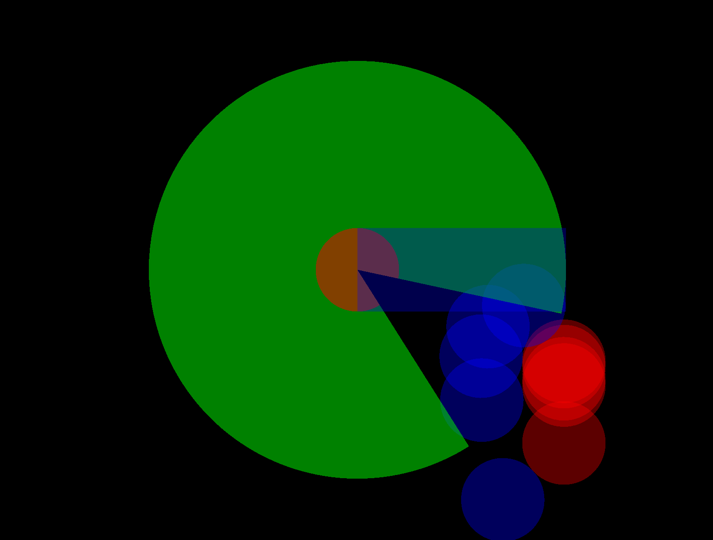

Sonar Avoidance
Component Agent Sonar Avoid is based on this previous package version called Local Avoidance 2.0. Users can still use SonarAvoidance directly without ECS interface.
This local avoidance uses novel solution called SonarAvoidance. Idea is very simple. Interest point constructs sonar volume shaped in circle, that scans for nearby obstacles. Each obstacle cuts into the volume. Once all obstacles are scanned, the best direction can be calculated from it.
The solution is designed to be lightweight so it could be moved into any design. Thus the whole functionality is contained of single struct called SonarAvoidance.
Constructor
Sonar can be created with simple constructor.
var sonar = new SonarAvoidance(position, direction, up, innerRadius, outerRadius, speed);

Circular Obstacle
Circular shape obstacles usually used for other agents.
bool success = sonar.InsertObstacle(obstaclePosition, obstacleVelocity, obstacleRadius);

Obstacle with 0 velocity
Obstacle with negative y axis velocity
Note: Blue points shows where sonar would collide with collider red point at specific time. There can be multiple collision points.
Directional Obstacle
Directional shape obstacles usually used for limiting agent vision.
bool success = sonar.InsertObstacle(obstacleDirection, obstacleRadius);

With negative x direction and 180 degress
Cleanup
If you want to re-use the structure for next frame you can clear it.
sonar.Clear()
Or destroyed with dispose interface.
sonar.Dispose();